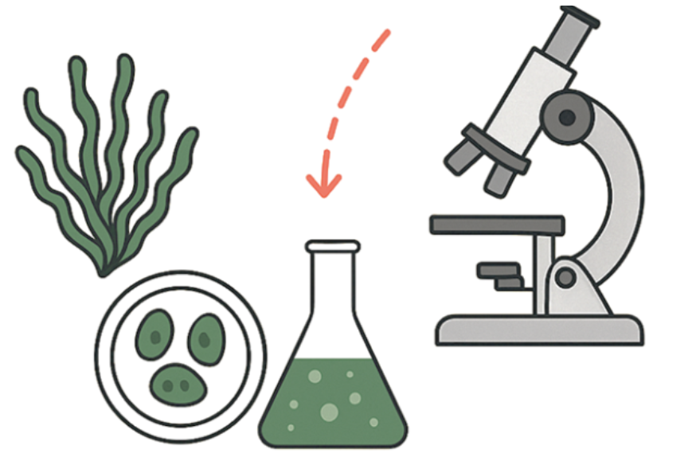

Découverte
Sensibilisation et exploration des écosystèmes algaires, de la biodiversité aux enjeux locaux dans la région de l’océan Indien.
Uhai Océan rassemble celles et ceux qui veulent mieux comprendre et valoriser durablement les ressources algales, de l’océan Indien au monde.
Trois axes guident nos actions : explorer le vivant marin, produire des connaissances solides et accompagner des usages responsables des algues.
Sensibilisation et exploration des écosystèmes algaires, de la biodiversité aux enjeux locaux dans la région de l’océan Indien.
Appui à l’étude scientifique, au partage de données et aux collaborations entre chercheurs, institutions et acteurs de terrain.
Promotion d’initiatives qui respectent les milieux et les communautés : alimentation, santé, environnement et biotechnologies.
Notre association relie les savoirs naturalistes, les approches de laboratoire et les besoins des territoires. Nous croyons que la coopération entre pairs — comme dans une colonie d’algues — fait progresser la science et les projets utiles.

Événements, projets et actualités : restons en contact.
Écrire à l’association